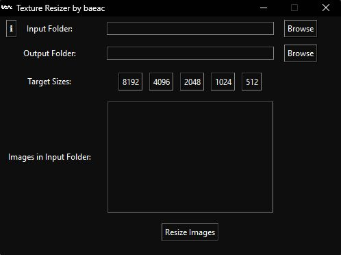
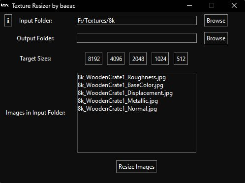
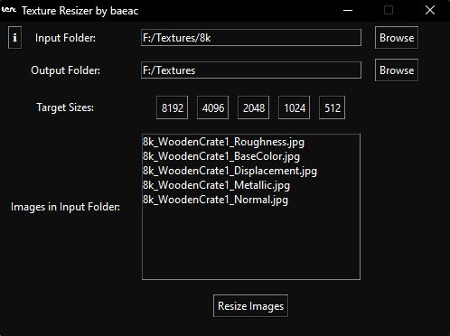
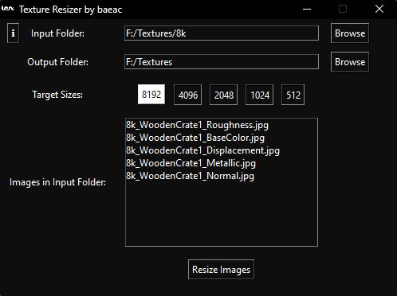
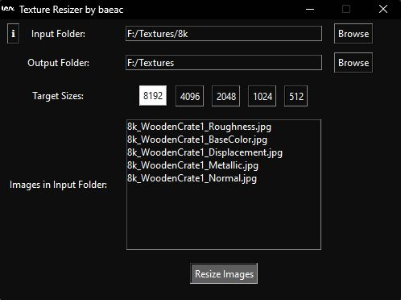
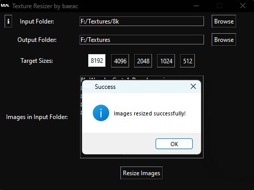

This website uses cookies to enhance user experience and analyze website traffic.
Texture Resizer by baeac is an easy way to quickly downscale your textures to any size you want. You will never have to do it manually again.
The current version has only been tested on a Windows machine and might not work on macOS or Linux
Author: baeac
Current Version: 1.0
You can find a full guide of how to use this here:
First, you need to install the executable you downloaded from my Gumroad page. This executable should have the name 'TextureResizer_Setup.exe'
To install it you can double click the executable and follow the instructions on the install wizard.
Once you have it installed, you can open the program.
When you have the program opened you will see something like this:

The first thing you want to do is make sure your textures are in the right place.
You should only have image textures in the folder that you want to resize. This means no folders, video files, text documents, etc.
With version 1.0 you can only resize .jpg files so make sure your textures are in that format, support for different texture files will come later.
When you are ready, you can click the 'Browse' button next to the input folder field.
Navigate to your folder and select "Select Folder", it should look something like this:

Now we need to define a place to put all the resized images. You can do that by clicking the 'Browse' button next to the output folder field.
Navigate to the folder you want the texture to end up in. The easiest folder would probably be the one above your input folder,
in my case that would be .../Textures.

The last thing we need to do before we resize our images is to specify which sizes we want to have.
Since I already have an 8k texture I will disable that option. You might also want to disable sizes above your original texture.
(Note: Disabled buttons appear white and raised, enabled buttons appear black and sunken.)

Now we can just click 'Resize Images' to resize our textures. This might take a couple seconds but you will get a popup when it's done.

When it's done, you will get this message:

And that's it! You have now resized your textures in the matter of seconds instead of minutes/hours.
If you have any questions you can contact me at the email listed below: